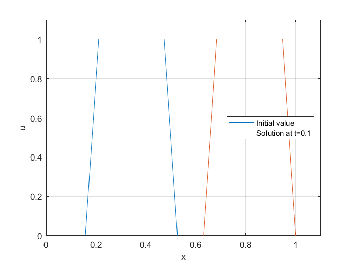
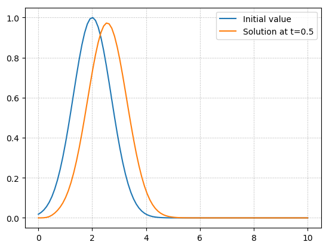
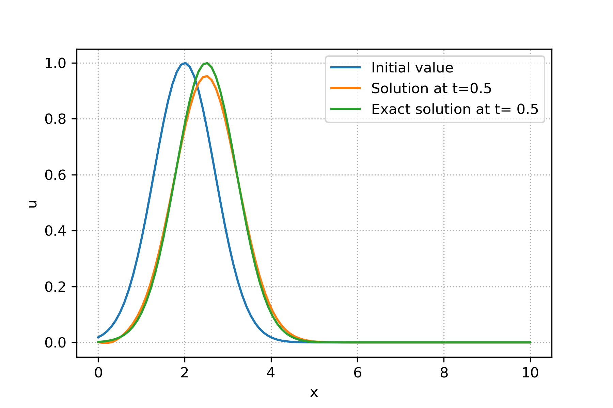
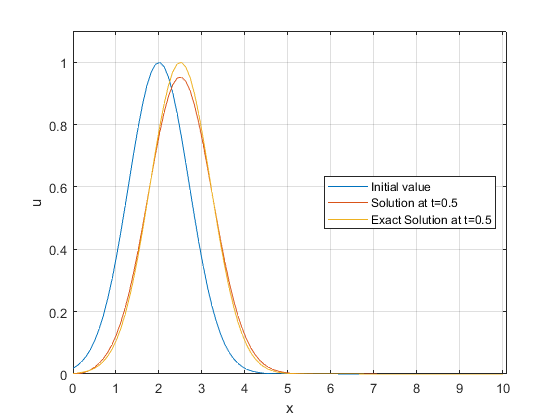
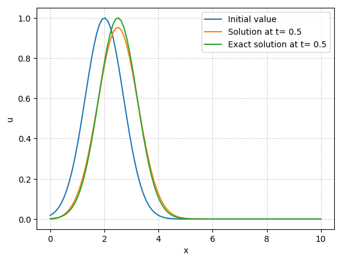
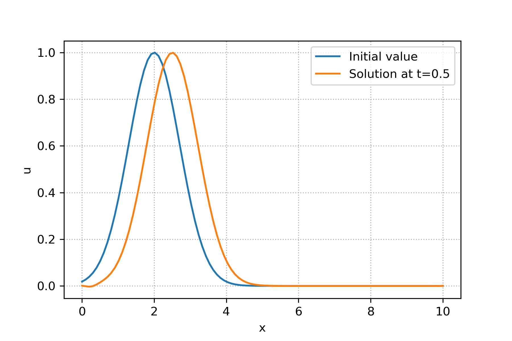
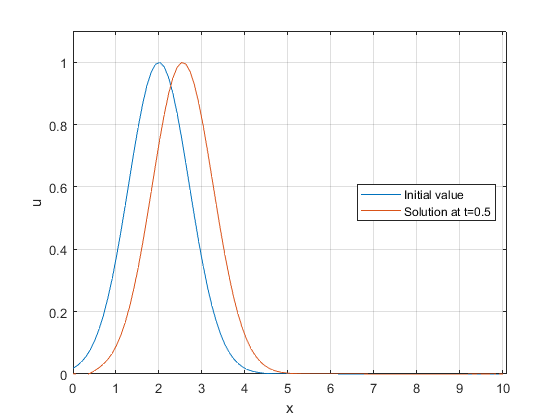
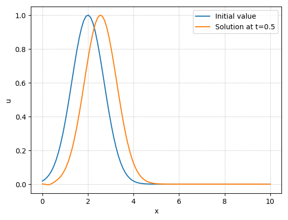

Linear 1D Advection Equation¶
Introduction¶
1D linear advection equation (so called wave equation) is one of the simplest equations in mathematics. The equation is described as:
where \(u(x,t), x \in \mathbb{R}\) is a scalar (wave), advected by a nonezero constant \(c\) during time \(t\). The sign of \(c\) characterise the direction of wave propagation. If \(c>0\), the wave propagates in the positive direction of \(x\)-axis. On the other hand if \(c<0\) then the wave propagates to the negative direction of x-axis. The mangitude of \(c\) tells us how fast the wave propagates. The exact solution of this equation is given by its initial value. Assuming that the initial value for equation (1) is given as \(u_0(x) = u(x,0)\), the exact solution of equation (1) is:
Numerical Techniques¶
Although this equation is simple to solve, it can be very useful for learning numerical techniques. We start by introducing the numerical methods.
Forward-Time Central-Space (FTCS) Method¶
FTCS is based on central spatial difference scheme and the temporal forward Euler method. Assume that \(t\) and \(x\) are descritized uniformly as:
Let us assume that \(u_{i}^{n}:=u(x_i,t_n)\). Then using applying central spatial difference and the temporal forward Euler methods to equation (1), we have:
If we rearrange equation (4) we finally have:
Stability And Accuracy¶
Let assume that solution of equation (1) is periodic in the defined domain. Lets consider \(\psi(x,t)\) is the solution of equation (1). Since this equation is a linear PDE, solution of this PDE is a sum of Fourier modes:
where \(k\) is the wave number. Now let us study the stability of solution considering an individual wave number. Let us discretize our space and time domain to \(x_{j}=j\Delta x\) and \(t_{n}=n\Delta t\), for \((j,n=0,1,...)\), then the solution at \(x_j\) at time \(t_n\) is \(\psi(x_j,t_n)\). We can see how the solution is amplified (or damped) by considering analytical amplification factor \(A_a\):
Using this and discretization of the spatial domain and considering the solution of one wave number, we have
Using the same idea for numerical scheme, we can also consider numerical amplification factor \(A\):
where here \(\Psi\) is our aproximated solution using a linear numerical scheme. Now we can use this equation in our numerical scheme and analyse its stability. Using equation (8) in equation (5) we have
In order that our numerical method to be stable, \(|A|\) should be less than 1. Calculating \(|A|\) we have
The above equation can never be able to be less that or equal to 1. Practically this method is not usefull since using von Neumann Stability Analysis, FTCS method is unconditionally unstable.
Upwind and Downwind Methods¶
Upwind and downwind methods refer to those methods that the spatial differences are skewed in the flow direction. The simplest upwind and downwind methods are the discribed by backward (\(c > 0\)) or forward (\(c < 0\)) spatial difference and the temporal forward Euler methods, respectively. As it is mentioned, the choice between the two spatial methods are dictated by the sign of \(c\), meaning the flow direction. Using the descritization methods described above we get:
where \(\gamma_{min}:=min(a,0)\) and \(\gamma_{max}:=max(a,0)\). Rearranging equation (12) we have:
where \(\alpha_{min}:=\frac{\gamma_{min} \Delta t}{\Delta x}\) and \(\alpha_{max}:=\frac{\gamma_{max} \Delta t}{\Delta x}\). Considering the solution is periodic, we can rewrite equation (13) in its matrix form:
where \(\mathbf{U}^{n+1}=[u_{0}^{n+1},u_{1}^{n+1},...,u_{N-1}^{n+1},u_{N}^{n+1}]^{T}\) and \(\mathbf{U}^{n}=[u_{0}^{n},u_{1}^{n},...,u_{N-1}^{n},u_{N}^{n}]^{T}\) and matrix \(\mathbf{A}\) for equation (13) is:
As we mentioned above, if (\(c > 0\)) we refer the discretization methods above as upwind and if (\(c < 0\)) as downwind.
Stability And Accuracy¶
Using the same idea from previous section, we calculate the \(A\) for upwind method:
where \(C=\frac{c \Delta t}{\Delta x}\). Now calculating its norm, we have:
If this method is stable, then \(|A| \leq 1\). Then we have,
which leads to
Thus this method is conditionally stable. Using the same analogy, for the downwind method we have
and if the method is stable, then \(|A| \leq 1\) leading to
Python Code (Matrix form)¶
Here is a python code for modeling the 1D linear advection equation using upwind method described above.
import numpy as np
import matplotlib.pyplot as plt
class LinearAdvection1D:
# Matrix for LA1D
A=0
# Initialization of constants
def __init__(self, c, x0, xN, N, deltaT,T):
self.c = c
self.x0 = x0
self.xN = xN
self.N = N
self.deltaT = deltaT
self.T = T
# CFL number funct.
def CFL(self):
deltaX= (self.xN - self.x0)/self.N
return np.abs(self.c*self.deltaT/deltaX)
# check CFL number <=1 or not.
def checkCFL(self):
if (self.CFL()<=1):
flag=True
else:
flag=False
return flag
# Matrix assembly of LA1D
def upwindMatrixAssembly(self):
alpha_min=min(self.CFL(),0)
alpha_max=max(self.CFL(),0)
a1=[alpha_max]*(self.N-1)
a2=[1+alpha_min-alpha_max]*(self.N)
a3=[-alpha_min]*(self.N-1)
self.A=np.diag(a1, -1)+np.diag(a2, 0)+np.diag(a3, 1)
self.A[0,-1]=alpha_max
self.A[N-1,0]=-alpha_min
# Solve u=Au0
def Solve(self,u0):
return np.matmul(self.A,u0)
#############
# Start of the code
###################
# constants
N,x0,xN,deltaT,c,T=100,0.,10.,0.05,1.,0.5
# initialization of constants
LA1D = LinearAdvection1D(c, x0, xN, N, deltaT,T)
# initial value
x=np.linspace(LA1D.x0,LA1D.xN,LA1D.N)
u0=np.exp(-(x-2)*(x-2))
#plot of initial value
plt.plot(x,u0,label="Initial value")
plt.ylabel('u')
plt.xlabel('x')
plt.legend()
# calculating solution if CFL<=1
if (LA1D.checkCFL() is True):
print("CFL number is: ", LA1D.CFL())
LA1D.upwindMatrixAssembly()
for t in range(0,int(LA1D.T/LA1D.deltaT)):
u=LA1D.Solve(u0)
u0=u
else:
print("CFL number is greater than 1. CFL: ", LA1D.CFL())
# ploting the last solution
plt.plot(x,u,label="Solution at t="+str(LA1D.T))
plt.legend()
plt.grid(linestyle='dotted')
plt.savefig('LA1D.png',dpi=300)
print(deltaT/((xN - x0)/N))
print(LA1D.A)
{kind=link}
For the explanaition of the code, please take a look at the youtube video.
Matlab Code (Matrix form)¶
Here is a Matlab code for modeling the 1D linear advection equation using upwind method described above. First we define a class called LinearAdvection1D:
classdef LinearAdvection1D < handle
properties
% constants
A;N;x0;xN;deltaT;c;T;
end
methods
% Initialization of constants
function self = LinearAdvection1D(N,x0,xN,deltaT,c,T)
self.N = N; self.x0 = x0; self.xN = xN;
self.deltaT = deltaT;
self.c = c; self.T = T;self.A = zeros(N);
end
% CFL number funct.
function outputArg = CFL(self)
deltaX= (self.xN - self.x0)/self.N ;
outputArg = abs(self.c*self.deltaT/deltaX);
end
% check CFL number <=1 or not.
function flag=checkCFL(self)
if (self.CFL()<=1)
flag=true;
else
flag=false;
end
end
% Matrix assembly of LA1D
function upwindMatrixAssembly(self)
alpha_min=min(self.CFL(),0);
alpha_max=max(self.CFL(),0);
a1=alpha_max*ones(1,self.N - 1);
a2=(1+alpha_min-alpha_max)*ones(1,self.N);
a3=-alpha_min*ones(1,self.N-1);
self.A=diag(a1, -1)+diag(a2, 0)+diag(a3, 1);
self.A(1,end)=alpha_max;
self.A(end,1)=-alpha_min;
end
% Upwind solve
function x = Solve(self,u0)
x=transpose(self.A*transpose(u0));
end
end
end
For the main code we use LinearAdvection1D class in the folloing m file.
clc
clear all
% constants
N=100;x0=0.;xN=10.;deltaT=0.05;c=1.;T=0.5;
% object LA1D initialization
LA1D=LinearAdvection1D(N,x0,xN,deltaT,c,T);
x=linspace(LA1D.x0,LA1D.xN,LA1D.N);
% initial value
u0=exp(-(x-2).*(x-2));
% plot of initial value
plot(x,u0)
xlabel("x")
ylabel("u")
% calculating solution if CFL<=1
if (LA1D.checkCFL()== true)
disp(strcat("CFL number is: ",num2str(LA1D.CFL())))
LA1D.upwindMatrixAssembly()
for t=0:uint8(LA1D.T/LA1D.deltaT)
u=LA1D.upwindSolve(u0);
u0=u;
end
else
disp(strcat("CFL number is greater than 1. CFL: ",num2str(LA1D.CFL())))
end
% ploting the last solution
hold on
plot(x,u)
legend({"Initial value",strcat("Solution at t=",num2str(LA1D.T))},'Location','east')
axis([0 10.1 0 1.1])
grid on
For the explanaition of the code, please take a look at the youtube video.
{kind=link}
Julia Code (Matrix form)¶
Here is a Julia code for modeling the 1D linear advection equation using upwind method described above.
using PyPlot
type LinearAdvection1d
# dataIn [c,x0,xN,deltaT,T]
dataIn::Array{Float64,1}
N::Int
Initialize::Function
CFL::Function
checkCFL::Function
upwindMatrixAssembly::Function
upwindSolve::Function
function LinearAdvection1d()
self = new()
self.Initialize = function (dataIn::Array{Float64,1}, N::Int)
self.dataIn = dataIn
self.N = N
end
self.CFL = function ()
deltaX= (self.dataIn[3] - self.dataIn[2])/self.N
return abs(self.dataIn[1]*self.dataIn[4]/deltaX)
end
self.checkCFL = function ()
return self.CFL()<=1 ? true : false
end
self.upwindMatrixAssembly = function()
alpha_min=min(self.CFL(),0)
alpha_max=max(self.CFL(),0)
a1=[alpha_max for n in 1:self.N-1]
a2=[1+alpha_min-alpha_max for n in 1:self.N]
a3=[-alpha_min for n in 1:self.N-1]
A=Tridiagonal(a1,a2,a3)+zeros(self.N,self.N)
A[1,end]=alpha_max
A[end,1]=-alpha_min
return A
end
self.upwindSolve = function(u0::Array{Float64,1})
return self.upwindMatrixAssembly()*u0
end
end
end
#####################
# Start of the code
#####################
N=100;x0=0.;xN=10.;deltaT=0.05;c=1.;T=0.5;
LA1D=LinearAdvection1d()
LA1D.self.Initialize([c;x0;xN;deltaT;T],N)
LA1D.self.checkCFL()
x=linspace(x0,xN,N);
u0 = [exp(-(n-2.)*(n-2.)) for n in x];
PyPlot.plot(x,u0,label="Initial value")
if LA1D.self.checkCFL()
println("CFL number is: ", LA1D.self.CFL())
for t=0 : floor(Integer,T/deltaT)
u=LA1D.self.upwindSolve(u0)
u0=u
end
else
println("CFL number is greater than 1. CFL: ", LA1D.self.CFL())
end
PyPlot.plot(x,u0,label=string("Solution at t=",T))
PyPlot.legend()
PyPlot.grid(linestyle="dotted")
For the explanaition of the code, please take a look at the youtube video.
{kind=link}
Modified Equation¶
Modified equation first was introduced by Warming et al. which is a powerful tool of analysis the truncation error of time-dependent linear PDEs. In particular, the effect of diffusion or dispersion of the error terms can be studied using modified equation. Considering equation (13), the modified equation refers to the following formal equation:
Assuming \(v\) is \(C^{\infty}\), one can use taylor expansion of all terms in the above equation and deduce the folloing:
using \(\gamma_{max}+\gamma_{min}= c\) and \(\gamma_{max}-\gamma_{min}= sign(c)c=|c|\) we have:
taking the partial derivative of equation (24) with respect \(t\) and \(x\) we have:
If we multiply equation (26) by \(-c\) and sum it with equation (25) we get:
Substituting equation (27) to equation (24) we have:
Formally, (28) is the PDE which actually solved by upwind method. As can be seen, the first term in the right hand side creates artificial diffusion for equation (1) when solved numerically using upwind method. This shows that the upwind method creates numerical diffusion as wave propagates during time. This equation also shows that the method is first order accurate. As we mentioned in equation (19), upwind method is stable if \(|\frac{c \Delta t}{\Delta x}| \le 1\). This means that the diffusion coefficient in equation (28) \(\frac{c \Delta x}{2} \Big(Sign(c) - \frac{c \Delta t}{\Delta x}\Big)\) is positive.
Error due to Diffusion and Dispersion¶
Similar to von-Neumann stablity analysis, assume a wave-like solution of
where \(\phi_a\) is the wave phase. Substituting equation (29) to (1), we get \(\omega (k)=ck\) which corresponds to the relation between each wave frequency and its wavenumber \(k\). In general this relation is called dispersion. if we use discretization of \(x_{j}=j\Delta x\) and \(t_{n}=n\Delta t\), for \((j,n=0,1,...)\), then the solution at \(x_j\) at time \(t_n\) is \(\psi(x_j,t_n)\). We can now consider the analytical amplification factor:
Then wave phase also can be calculate using \(\omega (k)=ck\) we have:
Using equations (30) and (29), one can show that:
Since \(\omega (k)=ck\) for linear advection equation, we can calculate the phase and group velocity, namely:
This shows that the phase and group velocity are the same, meaning that the wave is non-dispersive.
Now consider the upwind method and using the same termiology of equations (32) and (30), we have:
where \(A\) is the numerical amplification factor and is defined as:
Note that \(A_a\) is derived from the analytical solution of the PDE and that \(A\) is derived from numerical approximation of the same PDE, which might not be in perfect agreement. As we seen before, in the von-Neumann analysis of upwind method, \(A\) was calculated in equation (16). We can compare \(A_a\) and \(A\) by considering the ratio their norm:
{kind=link}
In the figure above we can see for different values of \(C\), how \(\epsilon_A\) changed as the frequency increases. As can be seen for \(C=1\), both analytical and numerical amplification magnitude are the same and equal to 1. This is the case that numerical solution is the exact solution of the advection equation. However, as \(C\) decreases, for higher frequencies, \(\epsilon_A\) decreases dramatically, meaning that the numerical amplitude is smaller than the exact one.
We can also do the same analysis for the phase which is associated to dispersion. Defining \(\epsilon_\phi\) as the ratio between the numerical and analytical phase, and using equation (16), we have
{kind=link}
In the figure above we can see for different values of \(C\), how \(\epsilon_\phi\) changed as the frequency increases. As can be seen, there is no dispersion error for \(C=1\) and \(C=0.5\). for the values of \(C<0.5\), \(\epsilon_\phi<1\) meaning that the numerical solution moves slower than the physical one. On the other hand for \(C>0.5\), this is vice versa.
Method of lines¶
The numerical method of lines (MOL) is a technique for solving PDEs. In this method we discretize all but one dimension (for example temporal terms) and then integrate the semi-discrete problem as a system of ODEs or DAEs. For using this method, the PDE problem should be well posed as an initial value problem in at least one dimension, since the ODE and DAE integrators used are initial value in problem solvers. For this reason MOL cannot be used directly on purely elliptic partial differential equations, such as Laplace’s equation. However for solving Laplace’s equation using MOL, “method of false transients” can be applied or “semi-analytical method of lines” can be used.
For simplicity, let us assume equation (1) with \(c>0\). Then the semi discretization of this equation using backward spatial descritization is:
We have wide range of ODE solvers in Matlab, Julia and python, which we use some of them here.
Python Code (Using MOL)¶
Here is a python code for modeling the 1D linear advection equation using MOL.
import numpy as np
from scipy.integrate import odeint
import matplotlib.pyplot as plt
# function specifing the rhs of MOL
def rhs(u,t,A):
N=A[0];x0=A[1];xN=A[2]; c=A[3];
x=np.linspace(x0,xN,N);
dx=x[1]-x[0];
dudt=np.zeros(len(x));
# Periodic boundary condition
dudt[0]=-c*(u[1]-u[N-1])/dx;
for n in range(1,N-1):
dudt[n] =- c*(u[n]-u[n-1])/dx;
return dudt
T=0.5;
tspan=np.linspace(0,T,10);
N=100;x0=0.;xN=10.;c=1.;
x=np.linspace(x0,xN,N);
# Parameters of ODE system
A=[N, x0 ,xN ,c];
# Exact solution
uexc=np.exp(-(x-T-2)*(x-T-2));
# Initial value
u0=np.exp(-(x-2)*(x-2));
# Solving ODE
u = odeint(rhs, u0, tspan, args=(A,))
plt.plot(x,u0,label="Initial value")
plt.ylabel('u')
plt.xlabel('x')
plt.legend()
# ploting the last solution
plt.plot(x,u[-1],label="Solution at t="+str(T))
# ploting the last solution
plt.plot(x,uexc,label="Exact solution at t= "+str(T))
plt.legend()
plt.grid(linestyle='dotted')
plt.savefig('semi-LA1D_Python.png',dpi=300)
For the explanaition of the code, please take a look at the youtube video.
{kind=link}
Matlab Code (Using MOL)¶
Here is a Matlab code for modeling the 1D linear advection equation using MOL.
function Semi_LA1D_Matlab
clc
T=0.5;
N=100;x0=0.;xN=10.;c=1.;
x=linspace(x0,xN,N);
% Parameters of ODE system
A=[N x0 xN c];
% Exact solution
uexc=exp(-(x-T-2).*(x-T-2));
% Temporal solving range
tspan=[0 T];
% Initial value
u0=exp(-(x-2).*(x-2));
% Solving ODE
[t,u]=ode45(@(t,u) rhs(t,u,A),tspan,u0);
% Ploting initial value, exact sol. and numerical sol.
plot(x,u0);
hold on
plot(x, u(end,:));
plot(x,uexc);
axis([0 10.1 0 1.1])
xlabel("x")
ylabel("u")
grid on
legend({"Initial value",strcat("Solution at t=",num2str(T)),strcat("Exact Solution at t=",num2str(T))},'Location','east')
% function specifing the rhs of MOL
function dudt=rhs(t,u,A)
N=A(1);x0=A(2);xN=A(3); c=A(4);
x=linspace(x0,xN,N);
dx=x(2)-x(1);
% Periodic boundary condition
dudt(1,1)=-c*(u(1)-u(N))/dx;
for n=2:N
dudt(n,1) =- c*(u(n)-u(n-1))/dx;
end
end
end
For the explanaition of the code, please take a look at the youtube video.
{kind=link}
Julia Code (Using MOL)¶
Here is a Julia code for modeling the 1D linear advection equation using MOL.
using DifferentialEquations
using PyPlot
# function specifing the rhs of MOL
function rhs(dudt,u,A::Array{Float64,1},t)
N=Integer(A[1]);x0=A[2];xN=A[3]; c=A[4];
x=linspace(x0,xN,N);
dx=x[2]-x[1];
# Periodic boundary condition
dudt[1]=-c*(u[1]-u[N])/dx;
for n in range(2,N-1)
dudt[n] =- c*(u[n]-u[n-1])/dx;
end
end
N=100;x0=0.;xN=10.;c=1.;
T=0.5;
# Parameters of ODE system
A=[N, x0 ,xN ,c];
x=linspace(x0,xN,N);
# Exact solution
uexc=exp.(-(x-T-2).*(x-T-2));
# Initial value
u0=exp.(-(x-2).*(x-2));
# Problem definition of ODE in Julia
tspan = (0.0,0.5)
prob = ODEProblem(rhs,u0,tspan,A)
# Solving ODE
sol = solve(prob,saveat=0.5)
PyPlot.plot(x,u0,label="Initial value")
PyPlot.plot(x,sol[end],label=string("Solution at t= ",T))
PyPlot.plot(x,uexc,label=string("Exact solution at t= ",T))
PyPlot.legend()
PyPlot.grid(linestyle="dotted")
PyPlot.xlabel("x")
PyPlot.ylabel("u")
For the explanaition of the code, please take a look at the youtube video.
{kind=link}
Lax-Wendroff Method¶
Lax-Wendroff method belongs to the class of conservative schemes. As we can see later, this method provide a second order (in time and space) numerical solution. There are many ways to derive this method. We use one of these methods. Our main aim is to find the numerical solution at \(t=t_n+1\) knowing solution at \(t=t_n\). For this reason we write the taylor expansion of \(u(x,t+\Delta t)\) with respect to time, namely:
But from equation (1) we know that \(\partial_{t}=-c\partial_{x}\), thus we can substitude this expression in equation (40) and we get:
Now we can spatially approximate equation (41) using central difference scheme for \(u_{x}(x,t)\) and \(u_{xx}(x,t)\) which results in:
where \(a_{-1}=\frac{1}{2}C(1+C)\), \(a_{0}=1-C^2\), \(a_{1}=\frac{-1}{2}C(1-C)\) and \(C=\frac{c \Delta t}{\Delta x}\).
Similar to upwind method, we can rewrite equation (42) in its matrix form
Stability And Accuracy¶
Using the same idea from FTCS section, we calculate the \(A\) for Lax-Wendroff method:
Now calculating its norm, one can show that we have:
Where \(\chi=k \Delta x\). The method is stable if \(|A| \leq 1\) which leads to
Thus this method is conditionally stable.
Python Code (Using Matrix form)¶
For the code, we just need to modify the ::UpwindMatrixAssembly:: the 1DLinearAdvection class and also in the main code in the upwind Python code.
def LaxWendroffMatrixAssembly(self):
C=self.CFL();
aleft=C*(1+C)/2.;
amid=1.-(C*C);
aright=C*(C-1)/2.;
a1=[aleft]*(self.N-1)
a2=[amid]*(self.N)
a3=[aright]*(self.N-1)
self.A=np.diag(a1, -1)+np.diag(a2, 0)+np.diag(a3, 1)
self.A[0,-1]=aleft
self.A[N-1,0]=aright
# calculating solution if CFL<=1
if (LA1D.checkCFL() is True):
print("CFL number is: ", LA1D.CFL())
LA1D.LaxWendroffMatrixAssembly()
for t in range(0,int(LA1D.T/LA1D.deltaT)):
u=LA1D.Solve(u0)
u0=u
else:
print("CFL number is greater than 1. CFL: ", LA1D.CFL())
For the explanaition of the code, please take a look at the youtube video.
{kind=link}
Matlab Code (Using Matrix form)¶
For the code, we just need to modify the ::UpwindMatrixAssembly:: the 1DLinearAdvection class and also in the main code in the upwind Matlab code.
function LaxWendroffMatrixAssembly(self)
C=self.CFL();
aleft=C*(1+C)/2.;
amid=1.-(C*C);
aright=C*(C-1)/2.;
a1=aleft*ones(1,self.N - 1);
a2=amid*ones(1,self.N);
a3=aright*ones(1,self.N-1);
self.A=diag(a1, -1)+diag(a2, 0)+diag(a3, 1);
self.A(1,end)=aleft;
self.A(end,1)=aright;
end
% calculating solution if CFL<=1
if (LA1D.checkCFL()== true)
disp(strcat("CFL number is: ",num2str(LA1D.CFL())))
LA1D.LaxWendroffMatrixAssembly()
for t=0:uint8(LA1D.T/LA1D.deltaT)
u=LA1D.Solve(u0);
u0=u;
end
else
disp(strcat("CFL number is greater than 1. CFL: ",num2str(LA1D.CFL())))
end
For the explanaition of the code, please take a look at the youtube video.
{kind=link}
Julia Code (Using Matrix form)¶
For the code, we just need to modify the ::UpwindMatrixAssembly:: the 1DLinearAdvection type and also in the main code in the upwind Julia code.
self.LaxWendroffMatrixAssembly = function()
C=self.CFL();
aleft=C*(1+C)/2.;
amid=1.-(C*C);
aright=C*(C-1)/2.;
a1=[aleft for n in 1:self.N-1]
a2=[amid for n in 1:self.N]
a3=[aright for n in 1:self.N-1]
A=Tridiagonal(a1,a2,a3)+zeros(self.N,self.N)
A[1,end]=aleft
A[end,1]=aright
return A
end
self.Solve = function(u0::Array{Float64,1})
return self.LaxWendroffMatrixAssembly()*u0
end
For the explanaition of the code, please take a look at the youtube video.
{kind=link}
Modified Equation¶
Similar to previous section, considering equation (42), the modified equation refers to the following formal equation:
Similar to previous section one can write the taylor expansion of each term and replace the temporal term by spatial terms and end up with the following:
This shows that lax-Wendroff is second order accurate in time and space. Note that there is no diffusion term and only dispersion term can be seen here.
Error due to Diffusion and Dispersion¶
Similar to previous section we can analysis the behavior of numerical solution by analysing \(\epsilon_A\) and \(\epsilon_\phi\). As we seen before, in the von-Neumann analysis of upwind method, \(A\) was calculated in equation (44). Thus we can calculate \(\epsilon_A\):
{kind=link}
As can be seen here,